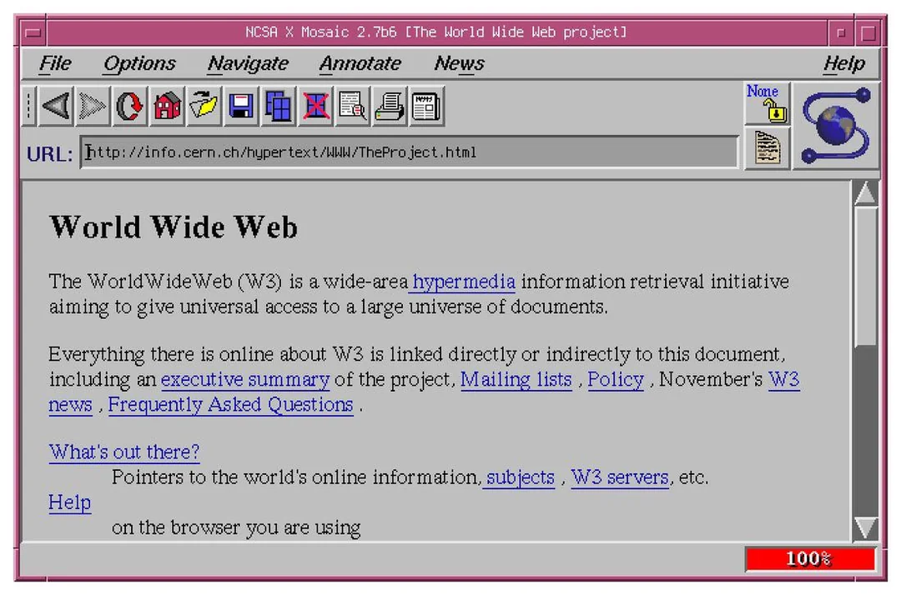

1993 - Navegador Mosaic
El Navegador que Popularizó Internet

Interfaz del navegador Mosaic - El primero con imágenes integradas
¿Qué fue Mosaic?
Mosaic fue el primer navegador web gráfico popular que permitía
mostrar imágenes integradas con el texto en la misma página. Lanzado en 1993, transformó la
World Wide Web de una herramienta para científicos en algo accesible para todos.
🖼️ La Gran Innovación
Imágenes y texto juntos en la misma ventana
Antes de Mosaic: solo texto
Con Mosaic: imágenes + texto + fácil de usar
|
Los Creadores: Marc Andreessen y Eric Bina
Mosaic fue desarrollado por Marc Andreessen y Eric Bina en el
NCSA (Centro Nacional para
Aplicaciones de Supercomputación) de la Universidad de Illinois, Estados Unidos.
Datos sobre los Creadores:
- Marc Andreessen: Tenía solo 22 años cuando creó Mosaic
- Eric Bina: Programador senior que trabajó con Andreessen
- Trabajaban en el NCSA de la Universidad de Illinois
- Andreessen más tarde cofundó Netscape Communications
- El proyecto comenzó en diciembre de 1992
|
Dato curioso: Marc Andreessen y Eric Bina programaron Mosaic en solo
6 semanas. Andreessen trabajaba hasta altas horas de la noche y dormía
en su oficina. ¡Su dedicación cambió Internet para siempre!
|
¿Por Qué Mosaic fue Revolucionario?
Antes de Mosaic, los navegadores web eran difíciles de usar y solo mostraban texto. Mosaic
introdujo varias innovaciones que hicieron la Web atractiva y accesible:
| Antes de Mosaic |
Con Mosaic |
- Solo texto
- Imágenes en ventanas separadas
- Interfaz complicada
- Solo para expertos
- Poco atractivo visualmente
- Difícil de navegar
|
- Imágenes integradas con texto
- Todo en una sola ventana
- Interfaz gráfica intuitiva
- Fácil para cualquiera
- Visualmente atractivo
- Navegación con clicks
|
Características Innovadoras de Mosaic
Mosaic introdujo muchas características que ahora consideramos normales en los navegadores:
Innovaciones Principales:
- Imágenes en línea: Las imágenes se mostraban directamente en la página
- Interfaz gráfica: Botones e iconos fáciles de usar
- Múltiples plataformas: Funcionaba en Windows, Mac y Unix
- Bookmarks (Marcadores): Guardar sitios favoritos
- Historial: Ver páginas visitadas anteriormente
- Formularios: Permitía interacción con páginas web
Fecha de Lanzamiento
La primera versión de Mosaic se lanzó el 22 de abril de 1993 para sistemas Unix.
Poco después se lanzaron versiones para:
| Fecha |
Plataforma |
| Abril 1993 |
Unix/X Window System |
| Septiembre 1993 |
Apple Macintosh |
| Noviembre 1993 |
Microsoft Windows |
Características Técnicas
| Característica |
Detalle |
| Fecha de Lanzamiento |
22 de abril de 1993 |
| Desarrollador |
Marc Andreessen y Eric Bina (NCSA) |
| Plataformas |
Unix, Windows, Mac |
| Licencia |
Gratuito (dominio público) |
| Lenguaje de Programación |
C |
| Protocolos Soportados |
HTTP, FTP, Gopher, NNTP |
El Impacto de Mosaic
Mosaic democratizó Internet. Por primera vez, personas sin conocimientos técnicos
podían navegar fácilmente por la Web. Esto provocó una explosión en el número de usuarios de Internet.
Estadísticas del Impacto:
| Período |
Usuarios de Internet |
Impacto |
| Antes de Mosaic (1992) |
~1 millón |
Solo expertos |
| 1993 (Lanzamiento) |
~2 millones |
Comienza expansión |
| 1994 |
~10 millones |
Explosión de usuarios |
| 1995 |
~40 millones |
Internet mainstream |
|
🚀 Crecimiento Explosivo:
En solo 18 meses después del lanzamiento de Mosaic, el tráfico en la Web
creció más del 340,000%. ¡Internet pasó de ser una curiosidad
a un fenómeno global!
|
De Mosaic a Netscape
El éxito de Mosaic llevó a Marc Andreessen a fundar Netscape Communications
en 1994 con Jim Clark. Netscape Navigator se basó en las ideas de Mosaic y se convirtió en
el navegador dominante de mediados de los 90.
La Evolución:
- 1993: Mosaic - El pionero
- 1994: Netscape Navigator - Mejora de Mosaic
- 1995: Internet Explorer - Microsoft entra al mercado
- 1998: Firefox (como Mozilla) - Código abierto
- 2008: Chrome - Google revoluciona los navegadores
El Legado de Mosaic
Aunque Mosaic dejó de desarrollarse en 1997, su legado continúa. Prácticamente todos los
navegadores modernos (Chrome, Firefox, Safari, Edge) heredan ideas y conceptos que Mosaic
introdujo por primera vez.
Contribuciones Duraderas:
- Interfaz gráfica intuitiva para navegar
- Imágenes integradas en páginas web
- Sistema de marcadores/favoritos
- Historial de navegación
- Soporte multiplataforma
- Diseño centrado en el usuario
|
🏆 Reconocimiento: En 1995, la revista Time escribió:
"Mosaic es el 'killer app' de Internet", describiendo cómo una sola
aplicación puede hacer que toda una tecnología se vuelva indispensable.
|
📚 Enlaces Relacionados
Para más información sobre Mosaic, consulta:
|